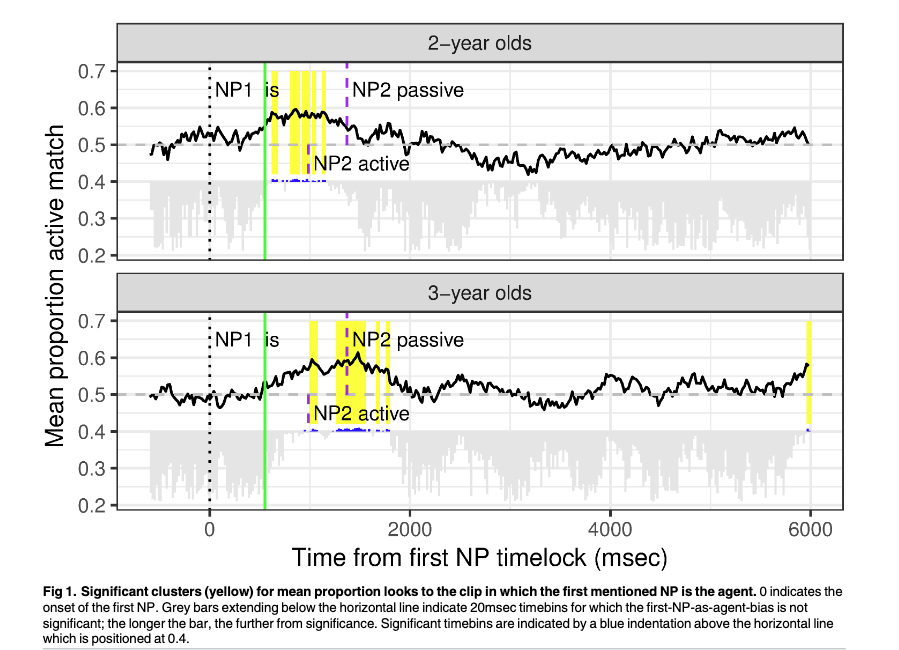
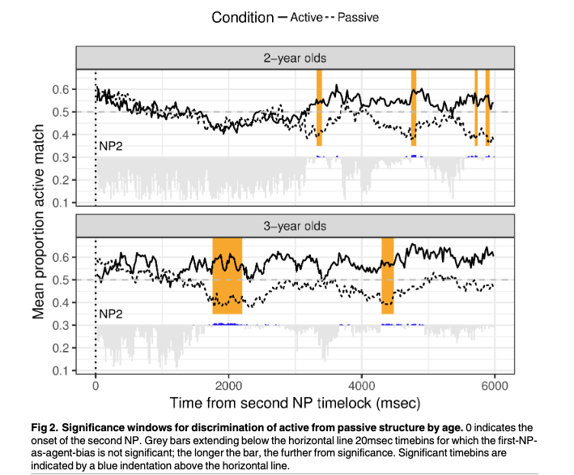
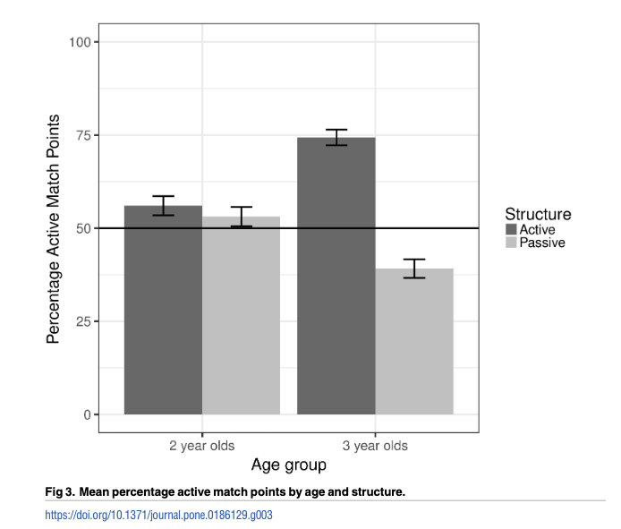
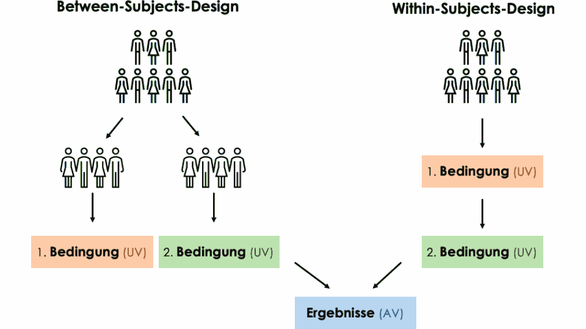
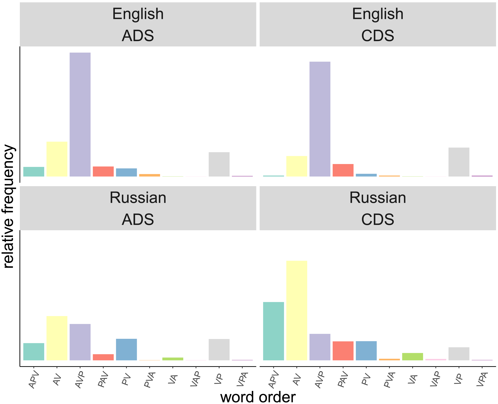

Sitzung 6: Agent Preference II (Kinder)
eva.scheel-huber@uni-koeln.de
11. 06. 2026
Agens Präferenz (Sauppe et al. 2023)
Heute: Agens Präferenz im kindlichen Spracherwerb
Do two and three year old children use an incremental first-NP-as-agent bias to process active transitive and passive sentences?: A permutation analysis
Was sind die zwei Forschungsfragen, die die Autor*innen versuchen zu beantworten?
Was zeigen die Resultate und welche Forschungsfrage beantworten sie?



Ihr plant eure eigene Studie!
Gruppen:
Daten:
Sprachstunden: nach Vereinbarung
wichtig: das Hauptziel dieser Studienleistung ist die vertiefte Auseinandersetzung mit dem Aufbau von Experimenten und dem Einfluss von unterschiedlichen Sprachen auf die Sprachverarbeitung und den Spracherwerb. Ebenso dient die Studienleistung als Grundlage für Diskussionen. Ihr müsst keine perfekte, durchführbare Studie erstellen.
Was sind die unabhängigen und abhängigen Variablen in Abbot-Smith et al. (2017)?

Illustration von Link

(huber?)
| Wortstellung | Ambiguität 1. NP | Beispiel | Übersetzung |
|---|---|---|---|
| AVP | ambig | дочь (‘daughter.NOM/ACC’) видит (see-3SG) отца (father-ACC) | ‘The daughter sees the father’ |
| PVA | ambig | дочь (‘daughter.NOM/ACC’) видит (see-3SG) отец (father.NOM) | ‘The father sees the daughter’ |
| AVP | nicht ambig | мальчик (‘son.NOM’) видит (see-3SG) отца (father-ACC) | ‘The son sees the father’ |
| PVA | nicht ambig | мальчику (‘son-ACC’) видит (see-3SG) отец (‘father.NOM’) | ‘The father sees the son’ |
| Worstellung | Ambiguität 1. NP | Voraussage ET | Voraussage FC |
|---|---|---|---|
| AVP | ambig | mehr Blicke zu AVP bereits vor dem Verb | niedrige Fehlerquote |
| PVA | ambig | mehr Blicke zu AVP bereits vor dem Verb; 2. NP: immer noch mehr Blicke zu AVP | hohe Fehlerquote |
| AVP | nicht ambig | mehr Blicke zu AVP bereits vor dem Verb | niedrige Fehlerquote |
| PVA | nicht ambig | mehr Blicke zu AVP bereits vor dem Verb; 2. NP: 2-Jährige: mehr Blicke zu AVP, 3-jährige: mehr Blicke zu PVA | 2-Jährige: hohe Fehlerquote (niedriger als bei PVA+ambig), 3-jährige (oberhalb des Zufallswert) |